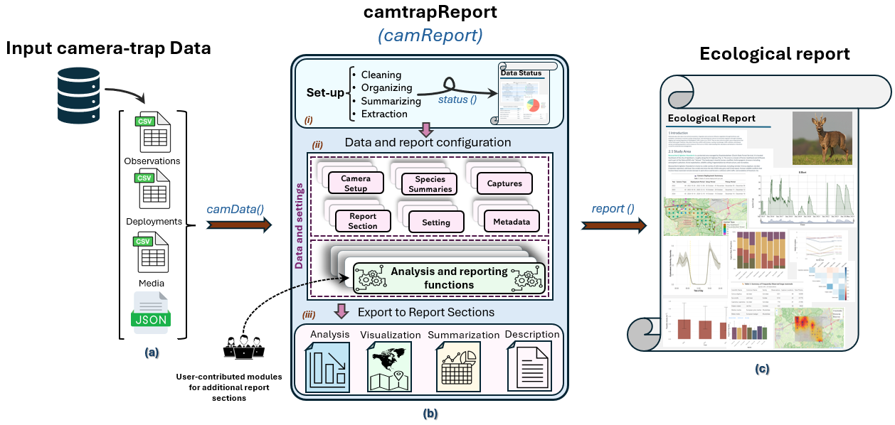

Introduction
camtrapReport is a modular, report-centred R framework
for transforming standardised camera-trap data into structured and
reproducible ecological reports. Rather than treating data-quality
assessment, analysis, visualisation and reporting as separate tasks, the
package manages them as coordinated components of a single computational
workflow.
The workflow is built around a central camReport object,
created with camData(). This object stores harmonised input
data, metadata, user settings, intermediate outputs, analytical modules
and report sections. From the same object, users can generate two
coordinated outputs:
- a Data Status Check, created with
status(), which evaluates data quality and readiness for ecological analysis; and - an Ecological Report, created with
report(), which assembles selected analyses, figures, tables, maps and explanatory text into a structured document.
Together, these outputs keep data assessment, analytical results, and
report composition connected within the same reproducible workflow.
Figure 1 summarises how camera-trap data are imported with
camData(), stored in the central camReport
object, and transformed into data-status checks, ecological analyses,
visualisations, and automated reports.

Figure 1. Overview of the camtrapReport workflow, from input camera-trap data to the central camReport object and final report outputs.
What camtrapReport is designed to do
camtrapReport is designed to bridge the gap between
standardised camera-trap data and reproducible ecological reporting. It
helps users assess whether a dataset is complete and internally
consistent, and supports the generation of ecological outputs through an
automated and reproducible workflow.
The package is intended to support researchers, monitoring practitioners, conservation managers, and the wider camera-trap community by reducing manual reporting effort and improving consistency across projects, sites, survey periods, and species groups.
Input data
camtrapReport requires a camera-trap dataset in Camtrap DP format, supplied as a
ZIP archive. Optional supporting data, including habitat information and
study-area boundaries, can be added to enhance visualisation, ecological
analyses, and interpretation.
Key outputs
Data Status Check Report
The Data Status Check report evaluates whether a camera-trap dataset is complete, internally consistent, and suitable for ecological analysis and report generation. It summarises data-quality dimensions such as completeness, consistency, annotation quality, validation status, temporal mismatches, spatial outliers, and observation types.
Ecological Report
The Ecological Report is a structured, article-style document assembled from selected analytical modules. It combines ecological summaries, tables, figures, maps, and narrative text into a reproducible report.
Both status() and report() create an HTML
file and the intermediate R Markdown file used to render it. By default,
these files are written beside the input dataset; an alternative output
path can be supplied through filename. The functions
invisibly return the path of the generated HTML file, which makes the
output location available to scripts and automated workflows.
Reproducibility, interpretation, and scope
Reproducibility in camtrapReport depends on preserving
the input Camtrap DP dataset, optional spatial and habitat inputs, the
selected report sections, and all settings used to create the
camReport object. For work intended for publication or
repeated monitoring, users should also record the package version, R
version, and versions of optional analytical packages, for example with
sessionInfo().
The package standardises checks, calculations, and report assembly; it does not determine whether a sampling design is appropriate for a particular ecological question. A successful Data Status Report does not establish that detections are unbiased, spatially independent, or sufficient for a specific model. Similarly, automatically generated ecological results require interpretation in relation to survey design, effort, detectability, habitat, season, and the assumptions of each selected method. Users remain responsible for checking input records and evaluating whether individual analyses are suitable for their data and scientific objectives.
Modular workflow
camtrapReport is not a fixed report template. Its
modular architecture separates the stable reporting framework from the
analytical methods that operate within it. Each module performs a
defined analytical or reporting task and returns structured components,
such as statistics, narrative text, tables, figures, or maps, to the
central camReport object.
Users can select which modules are executed and can omit, reorder, replace, or extend the corresponding report sections. Analytical settings can be modified, existing modules can be customised, and new modules can be developed using custom R code or YAML templates. These modules can then be registered within the workflow and included in reports without modifying the package core.
This design allows camtrapReport to be adapted to
datasets with different species, sampling designs, survey durations,
spatial extents, and reporting needs. It also allows analytical methods,
indicators, visualisations, and reporting requirements to evolve while
preserving a common structure for data access, configuration, execution,
provenance, and document assembly.
The modular framework therefore provides a practical pathway for reusable, project-specific, and future community-contributed modules.
How does camtrapReport differ from existing tools?
R has a rich ecosystem for working with camera-trap data. Existing packages support complementary stages of the camera-trap data lifecycle, including:
- Data standards and standardised data handling: camtrapdp;
- Data management and preparation: camtrapR and ct;
- Exploration, summaries, and visualisation: camtraptor, ctdp, camtrapR, and ct;
- Activity, diversity, abundance, and density analyses: activity, overlap, iNEXT, camtrapDensity, Distance, and ct; and
- Hierarchical and spatial modelling: unmarked and secr package.
These categories are not mutually exclusive, as several packages support more than one stage of the camera-trap data workflow.
These packages provide powerful functionality for particular data-processing tasks, ecological analyses, or model classes. However, producing a complete ecological report typically still requires users to organise several analytical steps, harmonise their settings and outputs, generate figures and tables, document processing decisions, and assemble the results into a coherent report.
The distinctive contribution of camtrapReport
To our knowledge, camtrapReport is the first R package
designed to automatically generate a complete, modular, and reproducible
ecological report directly from a standardised Camtrap DP dataset.
Its central innovation is that it treats the ecological report itself as the reproducible unit of work, rather than treating an individual transformation, analysis, model, or figure as the final product.
From a single standardised dataset, camtrapReport
coordinates:
- data-quality assessment and reporting;
- harmonised preprocessing and analytical settings;
- ecological analyses and indicators;
- figures, tables, maps, and other visual outputs;
- metadata and provenance;
- data-informed narrative and explanatory text; and
- generation of the final ecological report.
These components are managed through a shared camReport
object, which maintains the connection between the original records,
processing decisions, analytical results, and reported outputs.
Key differences at a glance
| Feature | Most existing tools | camtrapReport |
|---|---|---|
| Primary purpose | Perform a specific data-management or analytical task | Generate a complete ecological report |
| Primary output | Processed data, model objects, statistics, or individual figures | A structured and shareable report containing coordinated analyses, figures, tables, metadata, and narrative |
| Reproducible unit | An individual processing or analytical step | The complete reporting workflow |
| Workflow structure | Functions or workflows designed around particular methods | Independent and configurable report modules |
| Customisation | Users combine and adapt separate analytical scripts | Users can select, omit, reorder, and configure report sections |
| Extensibility | Additional analyses are commonly added through external scripts | New modules can be developed, registered, and reused without modifying the package core |
| Traceability | Depends on how users organise their workflow | Input data, settings, decisions, results, and report outputs are
explicitly linked through the camReport object |
| Consistency across datasets | Requires users to reproduce and harmonise their own workflows | A common framework supports consistent processing, analysis, visualisation, and reporting |
Relationship to other packages
camtrapReport does not aim to replace specialised
camera-trap packages or reimplement every available ecological model.
Instead, it adds a report-centred, reproducible, and extensible
layer to the existing R ecosystem.
Where appropriate, specialised tools, models, and data-processing procedures can be incorporated into report modules and presented within a consistent reporting structure.
In brief: existing packages help users manage or analyse camera-trap data;
camtrapReportautomatically transforms standardised camera-trap data into a complete, configurable, traceable, and reproducible ecological report.
Conclusion
camtrapReport provides a unified workflow for moving
from camera-trap data to reproducible ecological outputs. By combining
data preparation, quality assessment, ecological analysis,
visualisation, and report generation in a modular framework, the package
helps users produce transparent and consistent reports from camera-trap
datasets.
The two main outputs are the Data Status Check report and the Ecological Report. Together, they help users assess data readiness, identify potential issues, and translate camera-trap records into interpretable ecological information.
To learn more, continue to the Data Status Report, Ecological Report, and How to add new modules? articles.